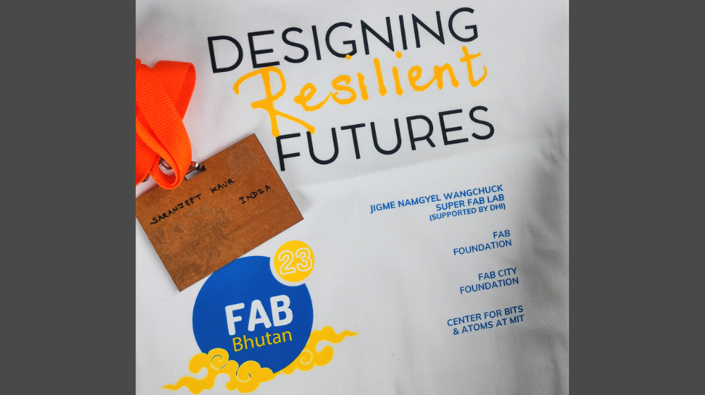
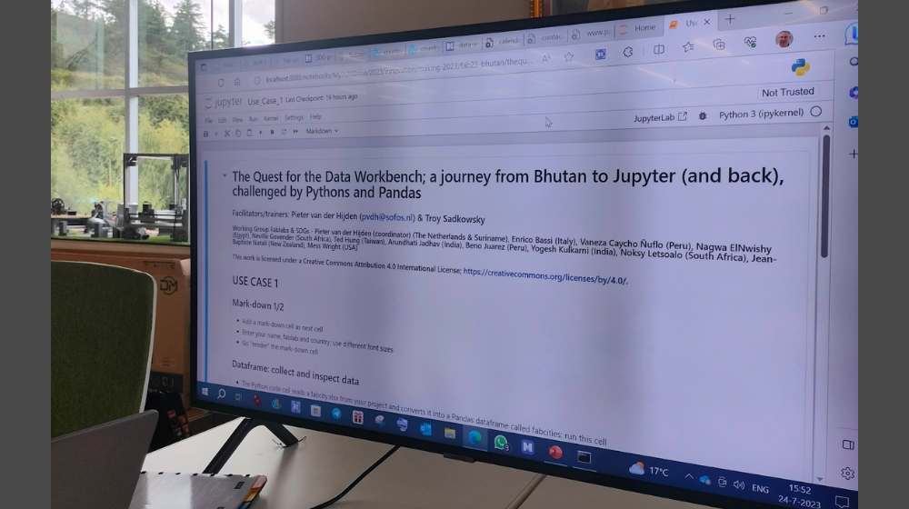
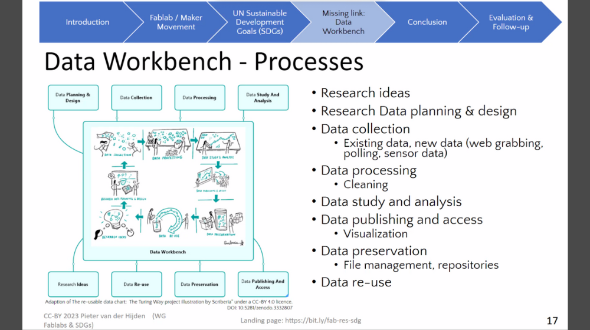
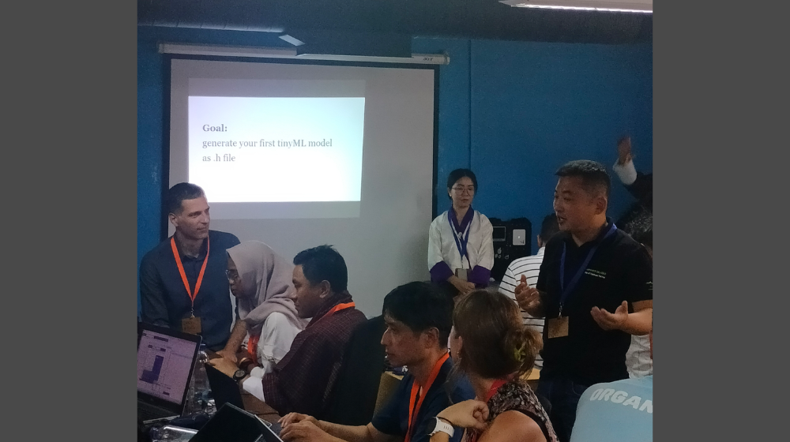

Exploring the Software Dimension at FAB23
Also posted on Software Sustainability Institute’s blog.
Founded in 2009, the Fab Foundation emerged to promote and support the growth of the worldwide fab lab network and the creation of regional capacity-building organisations. Originating from MIT’s Center for Bits and Atoms Fab Lab programme, the foundation’s mission is centred on providing access to tools, knowledge, and financial resources to facilitate education, innovation, and invention through technology and digital fabrication. This empowers individuals to create (almost) anything, opening up opportunities to improve lives and livelihoods on a global scale. The primary recipients of the Fab Foundation’s support are community organisations, educational institutions, and non-profit entities.
To raise awareness about the Fab community, the Fab Foundation organises various events worldwide, and in July 2023, I had the chance to participate in one such event: FAB23 in Thimphu, Bhutan. Besides exploring the Fab community, my purpose in attending this event was to gain insights into the intersections between the Fab community and the Research Software community. Throughout the conference, I attended three workshops in the Technology (R&D) track which helped me understand how (research) software plays an important role in the Fab community.

The first hands-on workshop was titled “The quest for the data workbench; a journey from Bhutan to Jupyter (and back), challenged by Pythons and Pandas” led by Pieter van der Hijden. The motivation for this workshop originated from the insights gained at the “Fablabs and the UN Sustainable Development Goals (SDGs)” Working Group, focusing on the role of data in driving machines, managing fablabs, overseeing the Fab Lab network, and examining the environment to identify areas where a positive impact can be achieved. During the session, participants from a variety of fablabs and backgrounds engaged in collaborative learning, each working on their Jupyter Notebook to explore interactive Python, Pandas, Markdown documentation, and develop a simple application. The session concluded with the sharing of thoughts, findings, and discussions on how to offer mutual support in the future.

Following this session, we invited Pieter as a guest for RSE Asia’s community call where he led a discussion on “The Quest for the Data Workbench: How to bridge the gap between the Sustainable Development Goals (SDGs) and the Fablab/Maker Movement?”

The second workshop at FAB23 that centred on software implementation was titled “Building smart projects with TinyML using EdgeImpulse and Blues Wireless,” organised by Salman Faris for those interested in the intersection of machine learning and electronics. This workshop delved into the concepts of TinyML, focusing on deploying machine learning models on microcontrollers with limited resources. The session included a discussion on how TinyML can enhance intelligence and autonomy in various electronic devices, spanning wearables, smart sensors, IoT devices, and more. Exploring the EdgeImpulse platform, participants were introduced to its user-friendly interface for designing and training TinyML models. The workshop covered aspects such as collecting and preprocessing sensor data, creating machine learning models using popular algorithms, and evaluating their performance. Techniques for optimising TinyML models for deployment on resource-constrained microcontrollers were also discussed. Practical examples illustrated how TinyML and electronics can be combined for projects like gesture recognition, voice-controlled devices, environmental sensing, and others. Step-by-step demonstrations were provided to showcase the integration of TinyML models trained with EdgeImpulse into electronic prototypes, showcasing the potential of this combination.
The third hands-on workshop titled “How to add machine learning to almost anything?” was organised by Eric Pan and Violet Su. During this workshop, participants delved into machine learning applications on the widely used embedded AI device, Seeed Studio XIAO ESP32S3 Sense. This compact yet powerful tool serves as an ideal entry point for those venturing into intelligent voice and vision AI. Attendees received a unit of XIAO ESP32S3 Sense, enabling them to explore the world of embedded AI. The workshop offered an introduction to various projects leveraging embedded AI, hands-on experiences to test different functionalities, and provided inspiration, insights, and resources to empower participants to construct their own models for future embedded AI projects.

Conclusion
Overall, my experience at FAB23 provided insights into the important role of software in the Fab community. The workshops showcased how (research) software contributes to innovation and sustainability within the Fab ecosystem, creating an intersection of technology, digital fabrication, and software development. The collaborative spirit and exchange of ideas during the sessions emphasised the potential for further synergies between the Fab and Research Software communities, opening doors to new possibilities and avenues for collaboration.